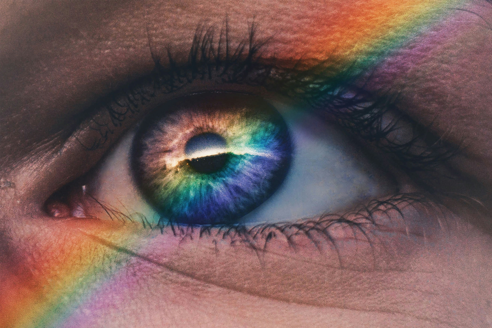
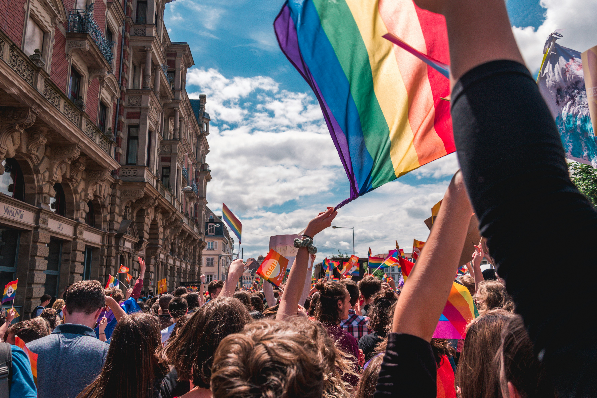

"Gay" is a term commonly used to describe men who are attracted romantically, emotionally, and/or sexually to other men. It's a sexual orientation that is part of the broader spectrum of human sexuality. Men who identify as gay form relationships and connections with other men Coming out and embracing one's gay identity is a personal journey. It involves self-discovery, self-acceptance, and often involves sharing this aspect of one's identity with others. Many individuals find support within the LGBTQ+ community and from friends and family.
Why some mens are considered as gay
There is no real explanation as to why some mens are gay and others are not Sexual orientation, including being gay, is a complex and multifaceted aspect of human identity.Research suggests that a combination of genetic, hormonal, and environmental factors may contribute to the development of sexual orientation. Social and cultural factors also play a role in shaping how individuals understand and express their sexual orientation. As societal attitudes and acceptance have evolved,more people may feel comfortable openly identifying as gay. Ultimately, sexual orientation is a complex interplay of biological, psychological, and environmental factors, and there is a wide range of diversity within the LGBTQ+ community. It's important to approach discussions about sexual orientation with respect and understanding, recognizing that each person's experience is unique.
Knowing whether you're a Gay
There is no questionnaire or test you can complete that will tell you whether you are
Gay or not. If you are a Gay you may:
feel attracted to other Men
feel you are different to your friends or don't always 'fit in'
feel confused because you're attracted to men.
These feelings can be difficult to cope with, but are all very normal. It can take time
Take time for self-reflection to explore your feelings, attractions, and experiences. Consider your emotional and romantic connections with others.Pay attention to your patterns of attraction. If you find yourself consistently attracted to individuals of the same gender, it may be an indication of being gay. However, it's essential to recognize that sexual orientation is diverse, and experiences can vary.Consider your emotional connections. Are you forming deep emotional bonds with individuals of the same gender? Emotional and romantic attractions are key components of sexual orientation.
There is no way you can tell whether a man is a gay just by looking at him. Individuals may be comfortable discussing their sexuality. However,it's important to approach such questions with sensitivity and only if you have a close and trusting relationship Like any relationships, gay couples may face challenges.
Before you decide to 'come out', you should consider who you will tell and what their reaction may be. Coming out can be a long process. Be prepared for both positive and negative reactions. For some people, coming out is a positive step. For others, it is an unnecessary complication.
The major difference between men and straight relationships is that there are two men, instead of a man and a woman. Gay men fall in love and form committed relationships. Like all relationships, there will be both good and bad times. There are no rules you have to follow in Gay relationships. Everyone is free to make up their own rules.
Consent is the cornerstone of any healthy sexual activity. Ensure that all parties involved willingly and enthusiastically agree to participate.Open communication with your partner is crucial. Establishing clear communication helps build trust and ensures a positive experience for both parties.